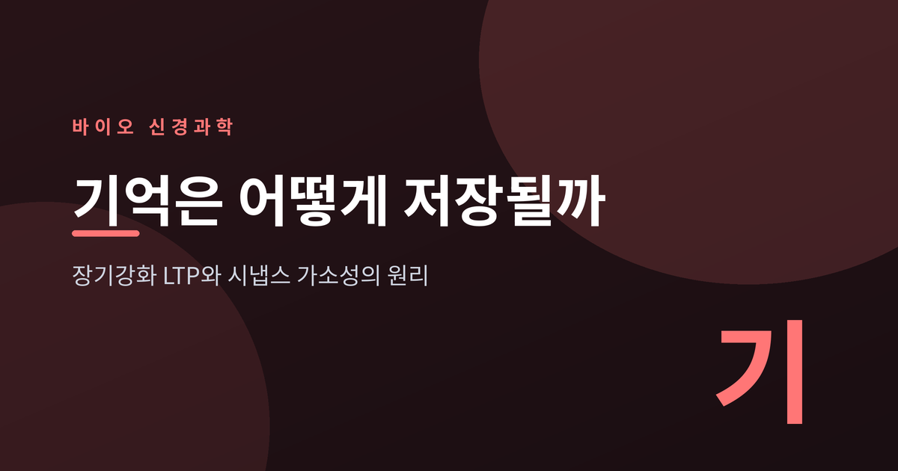
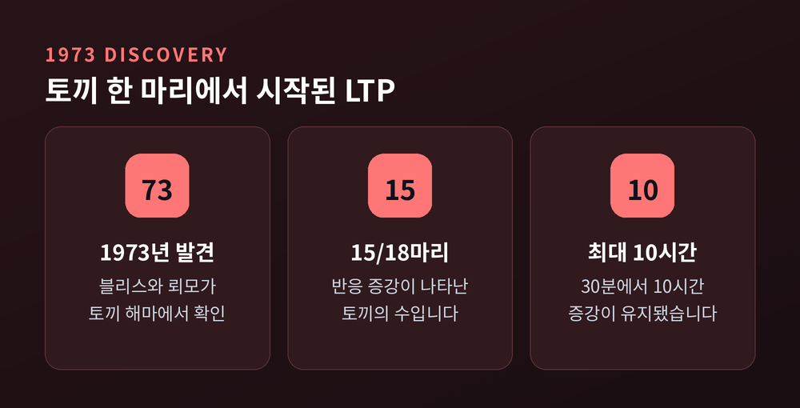
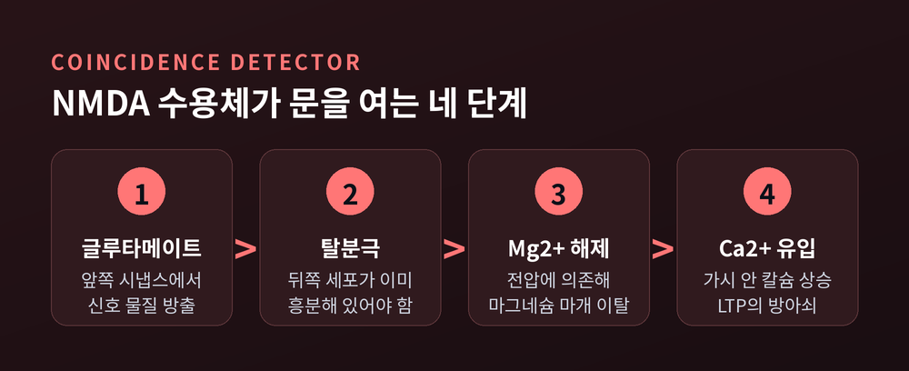
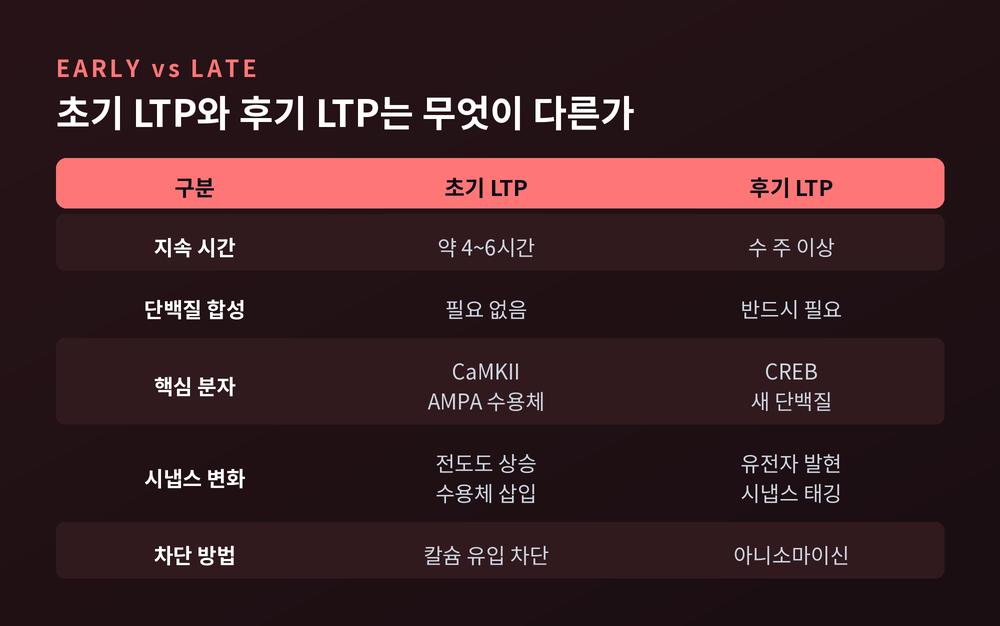
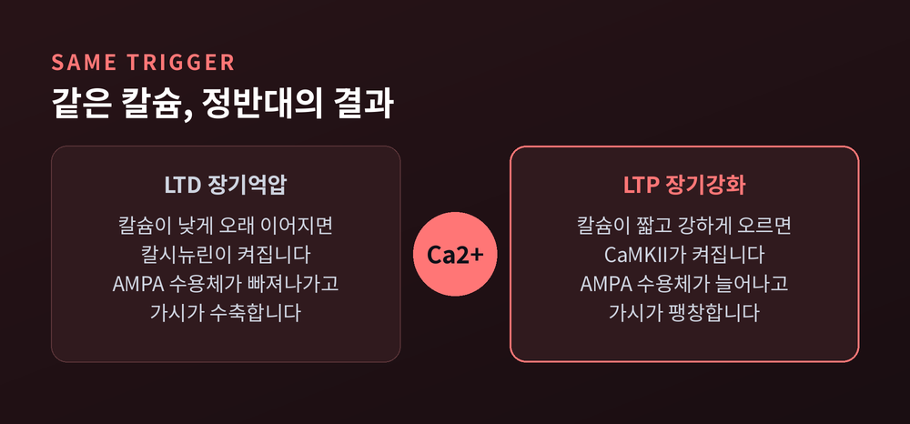
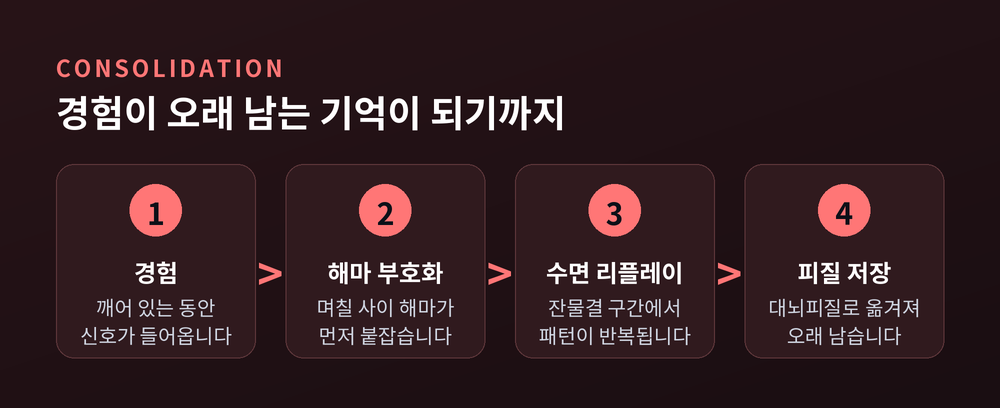

이번 글에서는 기억이 뇌에 새겨지는 분자 수준의 과정을 정리해 보겠습니다. 뉴런이 신호를 주고받는 이야기가 아니라, 그 신호가 지나간 자리에 무엇이 남는지에 관한 이야기입니다. 장기강화(LTP)라는 현상 하나를 축으로 삼아 따라가 보려 합니다.

먼저 결론부터 세 줄로 요약하겠습니다.
기억이 시냅스에 남는다는 생각 자체는 오래되었습니다. 도널드 헵이 1949년 저서 『The Organization of Behavior』에서 제안한 규칙이 출발점입니다. 앞쪽 뉴런이 반복해서 뒤쪽 뉴런을 발화시키는 데 기여하면, 그 둘을 잇는 시냅스의 효율이 올라간다는 내용입니다.
흔히 인용되는 "함께 발화하는 뉴런은 함께 연결된다"는 문장은 사실 헵의 원문에 없습니다. 이 네 단어짜리 축약은 신경과학자 칼라 섀츠가 1992년에 만든 표현입니다. 헵의 가정을 정확히 요약하기는 했습니다만, 출처를 헷갈리기 쉬운 대목입니다.
가설이 실험으로 확인된 것은 1973년입니다. 팀 블리스와 테리에 뢰모는 마취한 토끼의 해마를 열었습니다. 관통로에 자극 전극을 놓고, 치상회 과립세포에 기록 전극을 놓았습니다.
짧고 강한 자극을 한 번 준 뒤 다시 평범한 단일 자극을 넣어 보았습니다. 반응이 커져 있었습니다. 그리고 그 상태가 유지되었습니다.
수치는 이렇습니다. 토끼 18마리 중 15마리에서 반응 증강이 나타났고, 지속 시간은 30분에서 길게는 10시간이었습니다. 조건화 자극은 10~20Hz로 10~15초, 또는 100Hz로 3~4초였습니다. 흔히 인용되는 조합은 15Hz로 15초입니다.
이 현상에 붙은 이름이 장기강화, 곧 LTP(Long-Term Potentiation)입니다. 20년 뒤 블리스와 콜링리지는 『네이처』 361권(1993년 1월 7일자, 31~39쪽)에 종합 리뷰를 실어, 해마 LTP를 척추동물 학습과 기억을 연구하는 대표 실험 모델로 정립했습니다.

LTP가 아무 때나 일어나지는 않습니다. 열쇠는 해마 CA1 시냅스에 있는 NMDA 수용체입니다.
이 수용체는 분자 수준의 'AND 게이트'처럼 작동합니다. 채널이 열리려면 두 가지가 동시에 필요합니다. 하나는 시냅스 앞쪽에서 날아온 글루타메이트가 결합하는 것입니다. 다른 하나는 시냅스 뒤쪽 세포가 이미 탈분극되어 있는 것입니다.
두 번째 조건이 왜 필요한지는 마그네슘 때문입니다. 평소 휴지막전위에서는 마그네슘 이온이 NMDA 채널 구멍을 막고 앉아 있습니다. 글루타메이트가 와도 전류가 흐르지 않습니다.
그런데 이 차단은 전압에 의존합니다. 세포가 충분히 탈분극되면 마그네슘이 밀려나고, 그제야 통로가 뚫립니다.
그래서 NMDA 수용체를 '동시성 검출기'라고 부릅니다. "누가 말을 걸었는가"와 "내가 마침 반응하고 있었는가", 이 두 사건이 겹친 순간만 기록하는 장치인 셈입니다.
'동시'라는 말은 생각보다 엄격합니다. 스파이크 타이밍 의존 가소성(STDP) 연구에 따르면, 앞쪽 뉴런의 신호가 뒤쪽 뉴런보다 약 20밀리초 이내로 먼저 도착해야 시냅스가 강화됩니다. 순서가 뒤집히면 오히려 약해집니다. 인과의 방향까지 시냅스에 새겨지는 것입니다.
문이 열리면 칼슘이 들어옵니다. 수상돌기 가시 안쪽의 칼슘 농도 상승이야말로 LTP의 결정적 방아쇠입니다.

칼슘은 신호를 켜는 스위치일 뿐입니다. 실제로 시냅스를 바꾸는 일은 효소가 합니다.
가장 중요한 배우가 CaMKII입니다. 칼슘과 칼모듈린에 의존하는 단백질 인산화효소 II입니다. 칼슘이 들어오면 활성화되어 시냅스로 이동하고, NMDA 수용체에 결합한 채 일을 시작합니다.
CaMKII가 손대는 대상은 AMPA 수용체입니다. 평소 시냅스 전류의 대부분을 담당하는 수용체입니다.
두 가지 방식으로 시냅스가 세집니다.
첫째, 기존 수용체의 성능을 올립니다. CaMKII는 AMPA 수용체의 GluA1 소단위를 Ser831 자리에서 인산화합니다. 그러면 소단위들이 동시에 활성화될 확률이 높아지고, 결과적으로 더 큰 전도도 상태로 열리는 빈도가 증가합니다. 문의 개수를 늘린 게 아니라 문이 더 활짝 열리도록 만든 셈입니다.
둘째, 수용체 숫자 자체를 늘립니다. 흥미로운 것은 '침묵 시냅스'입니다. NMDA 수용체는 있는데 AMPA 수용체가 없어서, 글루타메이트가 와도 아무 반응이 없는 시냅스가 실제로 존재합니다. LTP는 이런 시냅스에 AMPA 수용체를 밀어 넣어 침묵을 깹니다. 이때 처음에는 GluA2가 빠진 칼슘 투과성 수용체가 먼저 들어가고, 나중에 GluA2를 포함한 수용체로 교체되는 순서까지 밝혀져 있습니다.
변화는 기능에만 머물지 않습니다. 2광자 글루타메이트 언케이징으로 가시 하나만 골라 자극하면, 그 가시의 머리가 실제로 부풀어 오릅니다. 가시 머리 부피는 기능적 AMPA 수용체 수와 강하게 상관됩니다. 기억은 눈에 보이는 형태로도 남습니다.
다만 한계는 인정해야 합니다. 초기 LTP에 수용체 삽입이 꼭 필요한지는 아직 깔끔하게 정리되지 않았습니다. 보툴리눔 독소로 수용체 소포의 세포외유출을 막아도 LTP의 가장 이른 단계는 영향을 받지 않았다는 보고가 있습니다.
여기까지가 초기 LTP입니다. 대략 네 시간에서 여섯 시간 정도 지속되며, 단백질을 새로 만들지 않아도 유지됩니다. 문헌에 따라 세 시간 미만을 기준으로 잡기도 합니다.
문제는 그 다음입니다. 몇 시간 뒤 사라지는 변화라면 평생 남는 기억을 설명하지 못합니다.
후기 LTP는 성격이 다릅니다. 유전자를 켜고 단백질을 새로 만들어야 성립합니다.
이 과정의 중심에 CREB이라는 전사인자가 있습니다. 에릭 캔델은 바다달팽이 군소에서 이 경로를 밝혔습니다. 뉴런이 약 2만 개뿐이고 하나하나가 커서 다루기 좋은 동물이었습니다. 반복 자극이 오면 cAMP가 올라가고, PKA와 MAP 키나아제가 핵으로 이동해 CREB을 활성화합니다. 그러면 유전자가 켜지고 새 단백질이 만들어집니다.
캔델은 이 공로로 2000년 노벨 생리의학상을 받았습니다. 아르비드 칼손, 폴 그린가드와 공동 수상이었고, 사유는 "신경계의 신호 전달에 관한 발견"이었습니다.
해마에서도 같은 원리가 확인됩니다. 항상 활성 상태인 CREB 변이체를 CA1 뉴런에 발현시키면, 지속적인 후기 LTP를 일으키는 데 필요한 자극의 역치가 낮아집니다.

여기서 까다로운 질문이 하나 생깁니다.
단백질은 세포체에서 만들어집니다. 그런데 LTP는 자극받은 그 입력에만 나타납니다. 한 뉴런에 시냅스가 수천 개인데, 새로 만든 단백질이 어떻게 '강해져야 할 그 몇 개'만 찾아갈까요.
1997년 프라이와 모리스가 『네이처』에 내놓은 답이 시냅스 태깅 가설입니다. LTP가 일어난 시냅스에는 짧게 유지되는 '태그'가 붙습니다. 이 태그는 단백질 합성과 무관하게 만들어집니다. 세포체에서 만들어져 흘러다니는 가소성 관련 단백질이 지나가면, 태그가 붙은 시냅스만 그것을 붙잡습니다.
표시해 두고, 나중에 도착한 재료를 낚아채는 방식입니다. 비유하자면 공사 예정 구역에 깃발을 꽂아 두는 일과 비슷합니다.
최근 연구들은 이 태그의 유효 시간이 애초 생각보다 더 유연하다고 보고합니다. BDNF가 단백질 합성 의존적 LTP의 핵심 조절자일 가능성도 계속 논의되고 있습니다.
강화만 있다면 뇌는 곧 포화됩니다. 반대 방향도 필요합니다.
LTD, 장기억압입니다. 해마 CA1에서 저빈도 자극을 오래 주면 시냅스가 약해집니다.
놀라운 점은 방아쇠가 같다는 것입니다. LTD도 NMDA 수용체를 거친 칼슘 상승으로 시작합니다. 차이는 양과 시간 패턴에 있습니다.
칼슘이 짧고 강하게 치솟으면 인산화효소가 켜지고 시냅스가 세집니다. 칼슘이 낮게, 그러나 길게 이어지면 탈인산화효소가 켜지고 시냅스가 약해집니다. 대표 선수가 칼시뉴린입니다. 칼시뉴린이 활성화되는 데 시간이 오래 걸린다는 점이, LTD를 만들려면 긴 저빈도 자극이 필요한 이유로 제시됩니다.
결과도 대칭입니다. LTP가 GluA1을 인산화한다면, LTD는 탈인산화하고 AMPA 수용체를 시냅스에서 끌어냅니다. 구조도 마찬가지입니다. 마그네슘이 있는 조건에서 저빈도 언케이징을 하면 약 35%의 가시가 수축했습니다.
같은 이온, 같은 시냅스, 정반대 결과입니다. 기억은 더하기로만 만들어지지 않습니다.

시냅스 하나가 세지는 것과, 한 사건이 기억으로 굳는 것은 다른 층위의 이야기입니다. 후자를 공고화라고 부릅니다.
세포 수준의 증거는 편도체에서 나왔습니다. 네이더, 셰이프, 르두가 2000년 『네이처』에 보고한 실험입니다. 공포 학습 직후 편도체에 단백질 합성 억제제인 아니소마이신을 넣으면 단기기억은 멀쩡한데 장기기억이 사라집니다. 그런데 주입을 6시간 늦추면 장기기억이 온전히 남습니다.
기억이 굳는 데는 분자적 '창'이 있고, 그 창이 닫히면 개입해도 소용이 없다는 뜻입니다.
같은 연구에서 더 뜻밖의 결과가 나왔습니다. 이미 굳은 기억이라도 다시 떠올리는 순간 잠시 말랑해집니다. 그 직후에 아니소마이신을 넣자 그 기억만 지워졌습니다. 이것이 재공고화입니다. 꺼내 본 기억은 그대로 다시 들어가지 않고, 다시 쓰여서 들어갑니다.
더 큰 시간 척도에서는 저장 장소 자체가 옮겨 갑니다. 최근 기억은 해마에 먼저 자리 잡고, 이후 대뇌피질로 넘어갑니다. 이 작업의 상당 부분이 잠든 사이에 일어납니다.
열쇠는 해마의 '날카로운 파형-잔물결'이라는 활동 폭발입니다. 이 구간에서 낮에 있었던 신경 활동 패턴이 압축된 형태로 되풀이됩니다. 학습 후 수면 중 이 구간을 짧게 방해하면 공간기억 인출이 나빠집니다. 사람 피질에서도 깨어 있을 때의 대규모 패턴이 NREM 수면 중 되풀이되는 것이 확인되었습니다.
예전에는 해마가 피질에 일방적으로 받아쓰게 하는 그림으로 이해했습니다. 지금은 양쪽이 주고받는 대화에 가깝다고 봅니다. 피질 활성화가 해마의 잔물결보다 먼저 오는 경우도 드물지 않습니다.

이론이 사람에게서 확인된 사례가 환자 H.M.입니다.
헨리 몰레이슨은 1953년 심한 뇌전증 때문에 양측 내측두엽 절제술을 받았습니다. 집도의는 윌리엄 스코빌이었고, 양쪽에서 약 8cm가 제거되었습니다. 해마와 편도체 일부가 포함되었습니다.
발작은 줄었습니다. 대신 새 기억이 만들어지지 않았습니다. 새로 만난 얼굴도, 새로 알게 된 사실도 남지 않았습니다.
흥미로운 것은 남은 능력입니다. 단기기억은 멀쩡했고, 몸으로 익히는 절차기억도 유지되었습니다. 1957년 스코빌과 브렌다 밀너의 논문은 여기서 내측두엽, 특히 해마가 새로운 기억 형성에 필수적이라는 결론을 끌어냈습니다. 이후 50여 년간 100명이 넘는 연구자가 그를 연구했습니다.
해마는 기억이 쌓이는 창고가 아니라, 기억을 굳히는 공정이었습니다.
시간이 흘러 생쥐에서는 기억의 물리적 실체를 직접 건드리는 실험이 가능해졌습니다. 2012년 도네가와 스스무 연구실은 공포 학습 중 활성화된 치상회 뉴런들만 표지한 뒤, 빛으로 그 세포들을 다시 켰습니다. 생쥐는 아무 일도 없는 곳에서 얼어붙었습니다.
2013년에는 한 걸음 더 나아갔습니다. 특정 장소에서 활성화된 뉴런을 표지해 두고, 다른 장소에서 전기충격을 주는 동안 빛으로 그 세포들을 재활성화했습니다. 생쥐는 충격을 받은 적이 없는 원래 장소를 무서워하게 되었습니다. 겪지 않은 일의 기억이 만들어진 것입니다.
여기까지 읽으면 그림이 다 그려진 듯 보이지만, 그렇지 않습니다.
가장 뜨거운 쟁점은 PKMzeta입니다. 한쪽에서는 이 효소가 장기기억 유지의 핵심이며, 억제 펩타이드 ZIP을 넣으면 기억이 지워진다고 봅니다. 2013년 1월 『네이처』에 실린 두 편의 논문이 여기에 제동을 걸었습니다. PKMzeta를 없앤 생쥐가 LTP도 정상이고 학습도 정상이었으며, 결정적으로 그 생쥐에서도 ZIP은 여전히 기억을 지웠습니다.
이후 가까운 효소 PKC이오타/람다가 대신 역할을 한다는 해석이 나왔습니다. 백업 기전이 있다는 이야기입니다. 아직 합의에 이르지는 않았습니다.
헵의 규칙 자체도 완결된 법칙은 아닙니다. 살아 있는 생쥐의 학습이 고전적 가소성 규칙에서 벗어난다는 보고도 있습니다. 강력한 1차 근사로 보는 편이 정확합니다.
정리하면 이렇습니다.
기억은 어딘가에 적히는 파일이 아닙니다. 칼슘이 얼마나, 얼마나 오래 들어왔는지에 따라 시냅스 하나하나의 세기가 조금씩 조정되고, 그 조정이 유전자 발현으로 고정되고, 잠자는 동안 다시 불려 나와 다른 자리로 옮겨 적힙니다.
"기억은 저장되는 것이 아니라, 매번 다시 지어지는 것이다."
재공고화 연구가 알려준 사실이 하나 더 있습니다. 우리가 어떤 기억을 떠올릴 때마다 그 기억은 잠시 말랑해졌다가 다시 굳습니다. 그러니 오래된 기억일수록 원본 그대로일 리 없습니다.
기억이 나를 만드는지 내가 기억을 만드는지 물으신다면, 아마 둘 다라고 답해야 할 것입니다.
이 글은 공개된 연구 자료를 정리한 과학 정보 글이며, 의학적 조언이 아닙니다. 기억 관련 증상이 걱정되신다면 전문의와 상담하시길 권합니다.